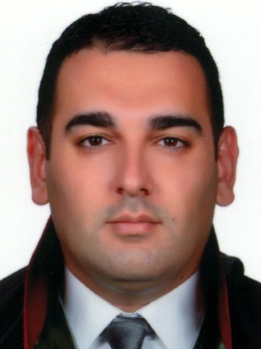

Kurucu Ortak
Av. Mustafa Gelegen
Aile, ceza, iş ve sosyal güvenlik, ticaret ve şirketler, icra ve iflas, gayrimenkul, miras ile idare ve vergi hukuku alanlarında dava takibi ve hukuki danışmanlık hizmeti vermektedir. Sürecin başlangıcından sonuçlanmasına kadar tüm aşamalarda müvekkillerine vekillik eder.
Çalışma Alanları
Yürütülen İş ve Davalar
- Aile hukukunda boşanma, velayet ve nafaka davaları ile mal rejiminin tasfiyesi süreçleri
- Ceza yargılamasının soruşturma ve kovuşturma aşamalarında şüpheli/sanık müdafiliği ve katılan vekilliği
- İş ve sosyal güvenlik hukukunda kıdem–ihbar tazminatı, işçilik alacakları ve iş kazasından doğan tazminat davaları
- Ticaret ve şirketler hukukunda ticari alacakların tahsili, çek–kambiyo takipleri ve şirket uyuşmazlıkları
- İcra ve iflas hukukunda ilamlı ve ilamsız takipler, itirazın iptali ve istihkak davaları
- Gayrimenkul hukukunda tapu iptali ve tescil, ortaklığın giderilmesi ve kamulaştırma davaları
- Miras hukukunda mirasçılık belgesinin alınması, tenkis ve mirasın paylaştırılması davaları
- İdare ve vergi hukukunda iptal ve tam yargı davaları ile vergi cezalarına itiraz süreçleri